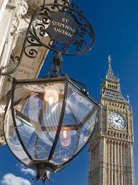
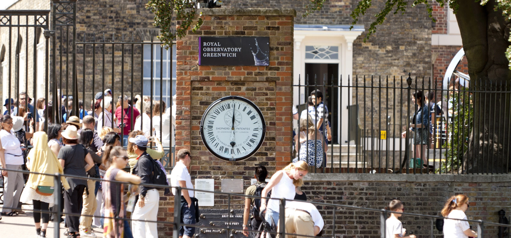
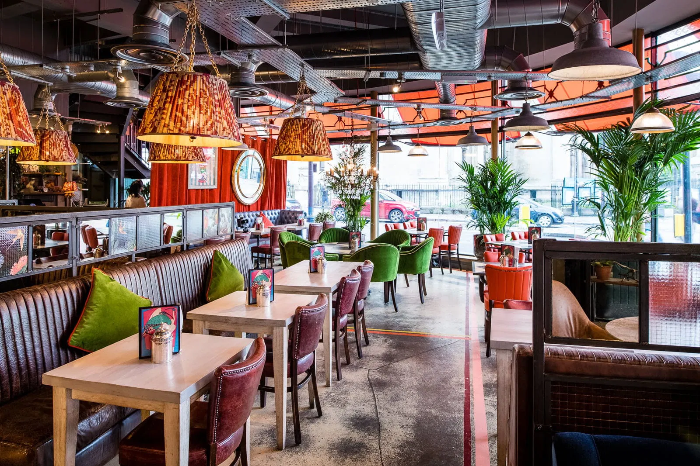
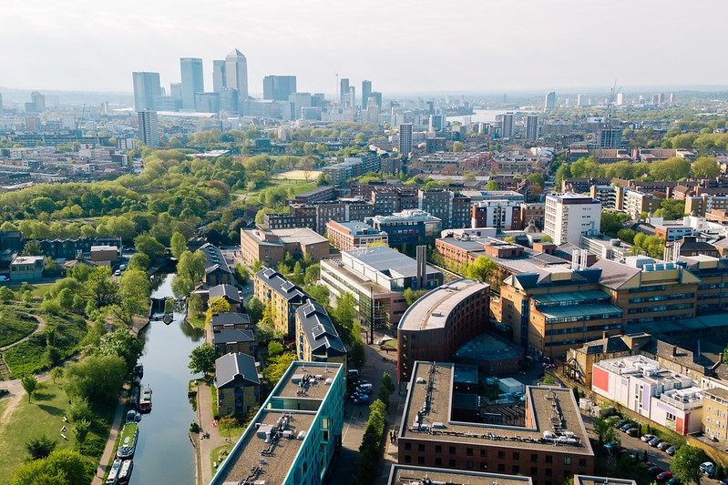

Venue
Social Events
  
Reception - location on Google Maps
We invite all participants to join us in St Stephens Tavern right in the heart of London - tables are booked for 7:30pm. The registration fee will cover one drink and one main (up to 30£) for each participant. The easiest way to reach St Stephens Tavern from the conference venue is by taking the District Line from Stepney Green Station to Westminster Station; the tavern is just outside the station and in front of the Big Ben.
Tour to Greenwich Observatory - location on Google Maps
For our social event, we invite all participants to the Royal Museum at the Greenwich Observatory. We will have a guided tour with a focus on the story of John Harrison’s Clocks, which starts at 5:30 pm - we meet at 5:20 at the admissions entrance at the Royal Observatory (not the Maritime Museum) SE10 8XJ. We recommend not taking a bus to GW Observatory due to traffic during rush hour. Instead we recommend using underground: (1) going with Distric line to Monument station and then changing to Southeastern to Maze Hill or (2) walking to Limehouse station and then taking the DLR line to Greenwich. See also this link for further ways (including a boat!) to get to GW Observatory. The admission to GW Observatory and the tour tickets are covered by the registration fee.
Conference Dinner - location on Google Maps
The conference dinner starts at 7:30 at Bill’s Greenwich Restaurant located just outside the Observatory Park. The dinner is covered by the registration fee.
Evening Concert (arrange individually) - location on Google Maps
As a suggestion for your Friday evening in London, we recommend attending the BBC Proms concert in Royal Albert Hall: M. Sutherland, Tchaikovsky, Dvořák. The Proms is an iconic London music festival held every summer. £8 “Promming” tickets (usually standing) are available online from 9:30 am on the day of the concert.
Queen Mary University of London

TIME 2025 will take place in the Mile End campus of Queen Mary University of London.
All the talks will take place in Maths Lecture Theatre (MB-G01) in Maths Building - building n.4 in this campus map.
The closest tube stations are Stepney Green and Mile End. For travel planning to the venue we recommend using the “directions” option in this google map. You can use the postal code GXF4+2P to locate the building.
The easiest and generally best value way to pay for all public transport in London (TFL) is using a contactless bank card or mobile device.
Related events in London in the period
London will also host the Very Large DataBase (VLDB’25) conference the week after TIME’25, with topics related to ours, so you might consider attending both.
Accommodation

Limited accommodation is provided by StayQM on the Mile End campus of QMUL where the conference will take place.
- Each flat is suitable for a maximum of 2 adult guests, with one double bed and an en-suite bathroom.
- The fee will be £86 per night (not £82.50), as QMUL is raising the prices from August.
- Bookings must be confirmed before 13th Aug.
To arrange a booking please fill the relevant parts of the PDF form and send an email to Raymond Hu. For further queries regarding specifically the QMUL accommodation, please contact Raymond Hu.
Other accommodation options reachable on foot (or by public transport) include:
- Travelodge Bethnal Green (£)
- Ibis Budget London Whitechapel (£)
- The Whitechapel Hotel (££)
- Holiday Inn Commercial Road (££)
- Town Hall Hotel (£££)
Visa
The UK has implemented an Electronic Travel Authorisation (ETA) system. You will likely need to apply for one before travelling. For full details and application instructions, please visit this webpage.